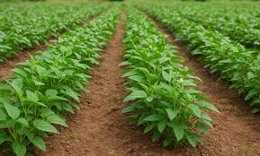
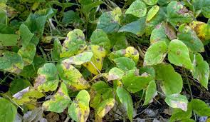
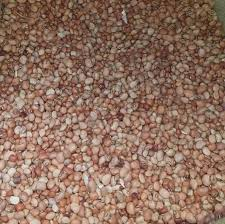

Mwongozo Kamili wa Kilimo Bora cha Kunde Kitaalamu

1. Idara ya Maandalizi ya Shamba na Udongo
Kunde ni zao dhabiti linaloweza kuvumilia joto na ukame kuliko maharagwe ya kawaida, lakini linastawi vyema kwenye udongo uliotayarishwa kitaalamu.
- Hali ya Udongo: Kunde hukua vizuri kwenye udongo tifutifu mchanganyiko na kichanga (sandy loam) unaopitisha maji kirahisi. Zao hili halivumilii udongo unaotuamisha maji kwa sababu husababisha magonjwa ya kuoza kwa mizizi.
- Ulimaji: Shamba lilimwe vizuri na kuvunjwa mabonge ili kuruhusu mbegu kuota kirahisi na mizizi kusambaa kwa haraka chini ya ardhi.
2. Idara ya Upandaji na Vipimo vya Nafasi
Nafasi sahihi ya upandaji inategemea kama zao hili linalimwa kwa ajili ya mbegu pekee au kama zao mseto [1.3].
| Aina ya Upandaji | Nafasi Kati ya Mstari na Mstari | Nafasi Kati ya Shimo na Shimo | Kina cha Kupanda |
|---|---|---|---|
| Zinazovimba kwa Matata (Bush type) | 50 Sentimita (50 cm) | 20 Sentimita (20 cm) | 3 cm hadi 4 cm (Mbegu 2 kwa shimo) |
| Zinazotambaa (Spreading type) | 60 Sentimita (60 cm) | 20 Sentimita (20 cm) | 3 cm hadi 4 cm |

📋 Ripoti ya Mahitaji
💵 Makadirio ya Kifedha ya Kunde
3. Idara ya Lishe na Uwekezaji wa Mbolea
Mmea wa kunde una uwezo mkubwa wa kurekebisha afya ya ardhi kupitia vinundu vya mizizi vinavyofyonza Nitrojeni hewani [1.3].
Mbolea ya Kupandia (Fosfari)
Kunde hazihitaji mbolea ya kukuzia (Nitrojeni/Urea) kwa sababu hujilisha zenyewe [1.3]. Hata hivyo, kuweka **kilo 50 za mbolea ya DAP au TSP kwa ekari** wakati wa kupanda kunasaidia sana kuimarisha mizizi na kuongeza wingi wa maganda wakati wa kuvuna [1.3].
4. Idara ya Mbegu: Aina za Mbegu Bora Tanzania
Kituo cha utafiti wa kilimo cha **TARI Ilonga** kimesajili mbegu bora zenye uwezo wa kutoa majani mazuri ya mboga na nafaka nyingi:
- Tumaini: Mbegu ya muda mfupi inayovumilia magonjwa ya virusi na kutoa mbegu nyeupe zenye jicho jeusi zinazopendwa sana sokoni.
- Vuli 1 & Vuli 2: Zinafaa sana kwa mikoa yenye mvua chache (vuli). Zinakomaa mapema sana (siku 60-70 tu), jambo linalomwokoa mkulima dhidi ya ukame wa ghafla.
- Aina za Kienyeji zilizoboreshwa: Zinafaa kwa maeneo ya nyanda za chini na pwani kwa sababu ya uzalishaji mkubwa wa majani yanayouzwa kama mboga ya majani (kisamvu cha kunde).
5. Idara ya Ulinzi: Kudhibiti Magugu na Wadudu
Kunde ni zao linaloshambuliwa sana na wadudu waharibifu kuanzia hatua ya kutoa maua hadi maganda.
Kudhibiti Wadudu Waharibifu
Wadudu Mafuta (Aphids): Wananyonya utomvu kwenye majani machanga na kusababisha ugonjwa wa virusi. Viongofuko (Flower Thrips) & Borers: Wadudu hatari wanaokula maua na kutoboa maganda mapema. Udhibiti: Kagua shamba mara mbili kwa wiki. Nyunyizia viuatilifu vilivyosajiliwa ( insecticides) wakati wa kuanza kutoa maua ili kulinda maganda [1.3].

6. Idara ya Uvunaji na Uhifadhi
Kunde hukomaa kati ya siku **65 hadi 85** tangu kupandwa kulingana na aina ya mbegu.
- Uvunaji: Vuna kwa mkono kwa kuchuma maganda yaliyokauka (yaliyogeuka rangi ya njano au kahawia). Usisubiri maganda yakauke kupitiliza shambani kwani yatapasuka na kumwaga mbegu chini ardhini.
- Uhifadhi Salama: Kausha maganda vizuri juani kabla ya kupura. Baada ya kupura na kupepeta, kausha mbegu hadi unyevu ufikie **11% - 12%**. Hifadhi kwenye mifuko ya kisasa inayozuia hewa (Hermetic bags kama PICS) ili kuzuia wadudu wa ghalani (bruchids) bila kuweka sumu za unga [1.3].
